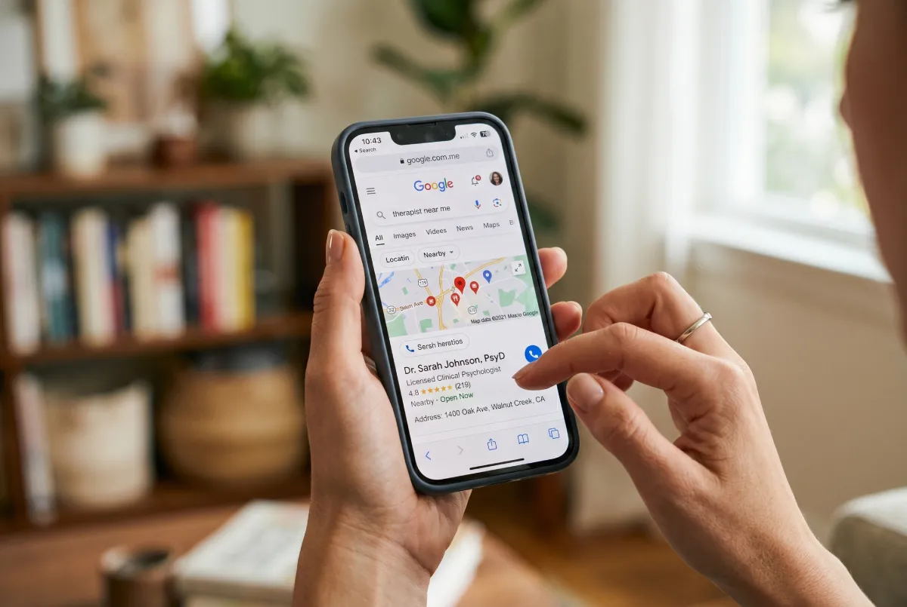
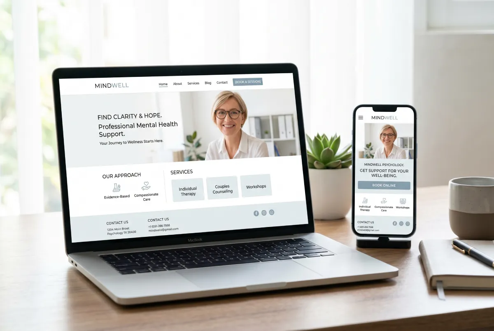
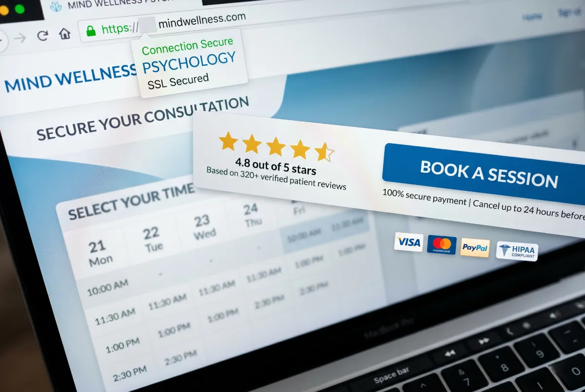

The question often comes from therapists with years of experience and a fully booked schedule: "Do I really need my own site? I already have a Psychology Today profile, patients find me through referrals, and my waitlist is closed." It’s a fair question. And it deserves an honest answer.
The short answer is yes. You need a website. But not for the reason you probably think.
It’s not about "looking professional" or having a digital brochure. It’s about control. Specifically, control over your image, how you are found, and who finds you.
People Search Differently Today
A decade ago, someone looking for a therapist asked a friend or their primary care doctor. Today, their first move is Google. They type "therapist in [city]" or "anxiety therapy near me" and start scrolling through the results.
This doesn’t mean referrals no longer matter. They do. But even a patient who was referred to you will search your name online before making the call. They will check if you exist. They will look for a photo, a way to reach out, and information about how you work.
If you don’t have your own site, this search either leads to your Psychology Today profile or ends up finding nothing at all. In the latter scenario, the patient often simply moves on to the next option.

Psychology Today Is Not Yours
Psychology Today is a wonderful platform. But it belongs to them, not you. This implies a few things worth your attention.
First, you don’t control how you appear. The layout, the template, the colors, the placement of your information—they decide all of it. Your profile looks exactly like dozens of other profiles right next to it.
Second, you compete directly with other therapists within the exact same platform. Someone visiting Psychology Today views multiple options side by side. Your own site eliminates this problem. There, the visitor is focused solely on you.
Third, the platform can change its rules, pricing, or search algorithms at any given moment. You are building something that relies entirely on the decisions of a third party. Your own site remains yours.
Therapists Need Trust Before Anything Else
Therapy isn’t a service someone chooses lightly. It’s a decision that requires vulnerability. A prospective patient isn’t just looking for a therapist. They are looking for the right therapist—someone they feel they can open up to.
This sense of trust is built before the first contact is even made. It is built by your site. By the words they read. By the atmosphere the page creates. By whether they feel that you, as their potential therapist, truly understand what they are going through.
A directory profile cannot do this. A unique, well-crafted website can.
What Someone Searching for a Therapist Is Thinking
Imagine someone who has finally decided to ask for help. They open Google late at night, alone, and type in their struggles. They land on your site. You have a single page to help them decide whether to reach out or close the tab.
In those crucial few seconds, they aren't looking at your credentials. They are looking to see if your site speaks to them. If the language you use articulates exactly what they feel. If the design of your digital space feels safe or clinical.
That is what dictates the click on the "Get in Touch" button.

What a Website Does for a Therapist That Nothing Else Can
Let’s get specific. Here is exactly what a therapist gains when they invest in a properly designed site.
1. Google visibility for local searches
When someone types "therapist in Manhattan" or "anxiety therapy Upper West Side," Google returns targeted results. If you don’t have a site, you don’t exist in those results. Your Psychology Today profile might show up, but your own site has the power to rank high for the exact keywords tailored to you and your specific practice.
2. Total control over the first impression
The first impression you make on a prospective patient now happens online. A site lets you fully own this narrative. The tone you use. The values you project. The specific audience you are speaking directly to.
3. A built-in filter for the right patients
A great site doesn’t just attract patients. It attracts the right patients. The ones who naturally fit your specialty, align with your approach, and with whom the clinical work will be deeply productive.
4. A command center for all other tools
If you ever want to run Google Ads, you need a site where those clicks will land. If you want to send a newsletter, you need a site to collect emails. If you want to write articles to be discovered on Google, you need a site to host them.
"But My Practice Is Already Full"
This is the most common objection. And it makes perfect sense. If you don’t need new patients right now, why invest in an asset designed to bring in patients?
There are three reasons.
First, practices change. Patients graduate, lives shift, unforeseen pauses happen. The moment you need new patients is not the moment you should start building your digital presence. It takes time to yield results. The right time to build is now, when there is zero pressure.
Second, a site is not just an acquisition tool. It is your professional representative. Every time someone looks you up—even a peer or a referring physician—they end up somewhere. That "somewhere" needs to reflect your actual standard of care.
Third, SEO is a long game. A site you launch today begins ranking in six, nine, or twelve months. If you wait to build it until the next time you need it, you will always be a step behind.
"I Don't Know Tech, I Can't Handle It"
This concern is valid, but it is rooted in an outdated understanding of how a professional website operates today.
A premium web designer delivers a site that is completely ready. You don’t need to look at a single line of code. You don’t need to understand server hosting. You don’t need to constantly update plugins, because a properly architected site doesn’t demand endless maintenance.
Your only job is to communicate who you are, what you do, and who you want to help. The designer handles the rest.
What Makes a Therapist's Site Different
You cannot take a generic corporate template and retrofit it for a therapy practice. It simply will not work.
A therapist’s site needs to execute one very specific function: reduce friction. The person arriving on your page is already dealing with uncertainty. They fear judgment. They aren't sure if therapy is right for them or if their situation is "serious enough."
The site must answer these silent questions. It needs to feel warm without being informal. Clear without being clinical. Direct without being aggressive.
This delicate balance is what establishes trust before the first session even begins. And that trust is the bridge that turns a visitor into a patient.

What a Working Therapist Website Actually Looks Like
Certain elements are non-negotiable. They aren't many, but their presence is mandatory.
A sharp, immediate first impression
When someone lands on your site, they must understand within three seconds what you do, who you do it for, and why they should stick around. If this fails, you lose the visitor, regardless of how stellar a clinician you are.
Language centered on the patient
Therapists frequently write about themselves, their theoretical orientations, and their degrees. What the site must actually do is speak about the patient. What they feel right now. What they want to change. How they will feel after doing the work with you.
A frictionless path to contact
Every extra step between the patient and contacting you is an opportunity for them to bounce. Give them a clear contact button, a straightforward form, or a direct phone number. Nothing more than is strictly necessary.
Transparent practice information
Where are you located? Do you offer telehealth? Do you accept insurance? What is your fee? These details might feel mundane, but they are mission-critical. A patient who can’t easily find this information simply clicks back and contacts the next name on their list.
The Question Is Not "If" But "When"
People are searching for mental health services online at unprecedented rates. The demand for therapy continues to rise. Simultaneously, the number of professionals establishing a dominant digital footprint is also scaling up.
This means the choice to opt out of having a site today will progressively become an expensive mistake. Not tomorrow, but in a year, or in two years. Digital visibility compounds over time. You start today, and the dividends arrive months down the line.
The real question isn't "Will I eventually need a site?" It’s "When do I decide to start claiming my space?"
But What Kind of Site Do You Need?
This is where clarity matters. You do not need a bloated site with dozens of subpages, an exhausting blog schedule, and a convoluted booking matrix. You need an asset that does the heavy lifting.
For most therapists, this means five to seven highly optimized pages: a Home page, an About page, specific Services pages, and a Contact page. That is enough to establish authority, answer core questions, and seamlessly guide the patient to reach out.
Success isn't about page volume. It’s about the quality of the experience the site delivers. A user who reads a page and feels deeply understood will book a consultation. A user who is confused or overwhelmed will leave.
The Bottom Line
A therapist needs a website in 2026 for the exact same reason they need a well-furnished, private office: because profound trust is built in environments you completely control. Because the very first interaction now happens online. Because you cannot scale a healthy practice in a digital-first world if you are digitally invisible.
And because the next patient who desperately needs your help is typing a search into Google right now. The only question left is whether they are going to find you.
Looking for a Site That Represents You Properly?
At Evida Studio, we design digital presences for service professionals that turn visitors into patients. Start with a conversation.
Let's Talk